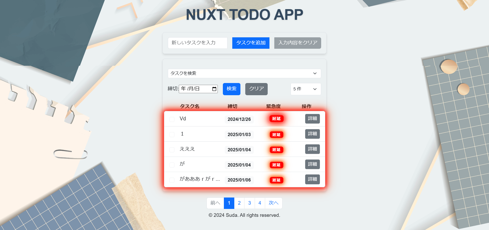

1. 概要
1.1 タスク一覧画面

1.2 イントロダクション
このドキュメントは、Nuxt.js を使用したタスク管理アプリケーションの設計書です。アプリケーションの構成、使用技術、動作フローについて詳細に説明します。
1.3 目的
このドキュメントの目的は、プロジェクトの開発者がアプリケーションの設計と実装について統一された理解を持つことを助けることです。
1.4 範囲
この設計書は、フロントエンドおよびバックエンドの主要なコンポーネント、データモデル、使用技術、開発およびテストの設定を網羅します。
1.5 定義
このセクションでは、このドキュメントで使用される主要な用語と概念を簡潔に記述します。
-
タスク管理: タスクの作成、編集、削除、完了などの操作を指します。
-
フロントエンド: ユーザーが直接操作する部分。Vue.js と Nuxt.js を使用。
-
バックエンド: サーバーサイドのロジックとデータ管理を担当する部分。Flask と MySQL を使用。